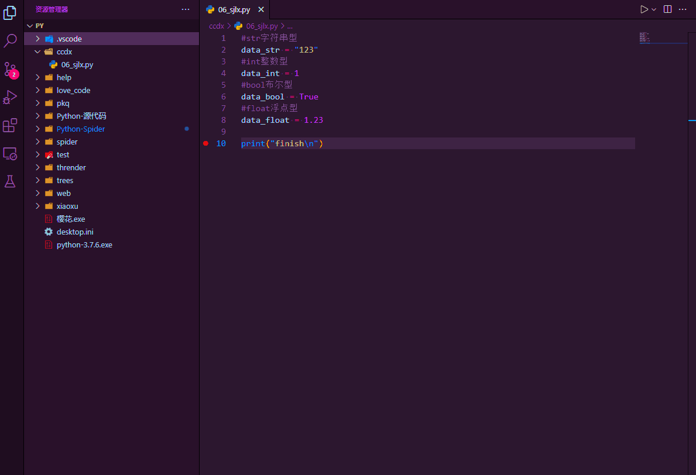
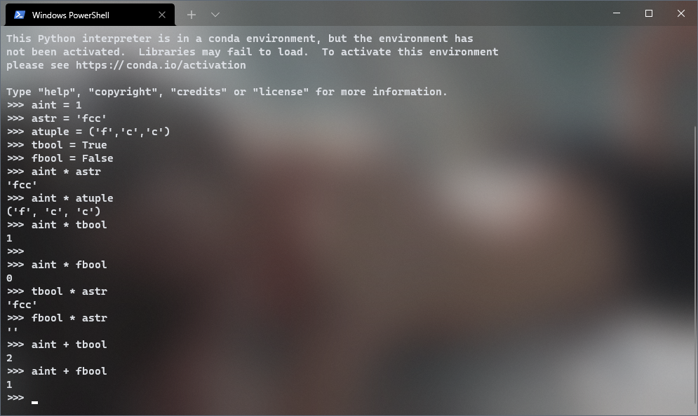
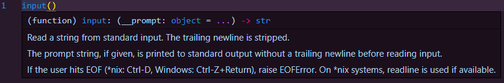
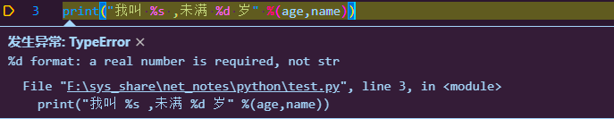

变量
程序就是来处理数据的，而变量就是数据存储的一种方式
变量的定义
跟其他语言不同的是，python的语法中，新建一个变量的时候可以不用声明其类型 直接对其进行赋值即可，python解释器会自动判断其类型
对变量赋值要用到赋值操作符
=号变量名 = 值其作用是把
右值赋给左值a = 1上方代码的意思就是把
a的值设定为1变量的类型
程序中的数据就可以叫做变量,那么数据就可以是有很多不同形式的信心
比如:
| 姓名 | 性别 | 年龄 | 身高 | 体重 | | :---: | :---: | :---: | :---: | :---: | | 小明 | 男 | 18 | 175 | 75.5 |
这一组数据就可以被当作不同的变量来输入系统,不同的数据类型操作也会有所区别
但这其中有字符串 有整数 有小数 那他们的变量会有什么不同呢
有过百年城基础的人都知道,int float str bool 是常用的数据类型,那么他们又代表什么呢
VScode实例
由这个vscode变量定义的实例来看出不同变量在解释器中的标识

其中共出现了四种不同的数据类型
bool布尔型: 表示
是或否int整形: 表示
整数float浮点型: 浮点
小数str字符串型: 表示
字符串
通过一个例子看出不同数据类型对操作结果产生的影响

所有变量类型
python中分为
数字型数据和非数字型两类数据类型非数字型：str (tuple) [list] {dict}
要想查看一个变量的具体类型，可以使用type函数
type(variable_name)不同变量之间的运算
有些运算符是支持不同种数据类型之间运算的，但其结果还是得看变量的性质
一些实例：

可以看出bool型的数据 真 在运算中代表值 1 ；假 代表 0
而不同数据类型之间的运算也很好通过逻辑来解释
非数字型可以进行跨类型的乘法，但只能乘整数，输出结果就是就是自身的n遍
非数字型还可以进行同类相加的操作( 比如字符串的相加 )，但是不能进行
- /两类运算（不合逻辑）数字型之间的运算就没有太多限制了，正常数学运算即可
变量的输入
在Python中,想要让程序获取键盘的输入信息,就需要使用
input()函数来接收数据a = input("输入:")输出结果:
输入:input()的函数有两个作用
第一：先输出一段事先定义好的字符串（通常用作提示信息）
第二：再将用户输入的信息缓存为字符串

input函数默认将输入内容转换为字符串赋值给变量，如果需要其他数据类型，利用数据类型转换函数即可
如下列格式
变量名 = 数据类型函数（input（））变量的格式化输出
若想使用print函数一次性输出多个变量，可以使用格式化输出字符串
具体用法如表
| 格式化字符 | 含义 | | :--------: | -------------------------------------------------------------- | | %s | 表示字符串 | | %d | 带符号的十进制整数，%06d表示输出的整数位数为6，不足的用“0”补齐 | | %f | 浮点数默认输出6位小数，%.02f表示显示两位小数 | | %% | 单纯输出一个
%|如下面这段源码:
name = "张天瑞" age = 18 print("我叫 %s ,未满 %d 岁" %(name,age))解释器会自动匹配相同的类型的变量并将其整合进入字符串
输出结果:
我叫 张天瑞 ,未满 18 岁如果按顺序变量不匹配格式
会出现报错:

变量的命名
关键字
关键字就是python内建的函数或类中,已经被占用的标识符名称 (通常会随着import的包而改变数量)
它们通常都是具有一定特殊功能的函数(比如_thread)
可以通过下列代码来实现显示当前的关键字:
import keyword print(keyword.kwlist)输出:
['False', 'None', 'True', 'and', 'as', 'assert', 'async', 'await', 'break', 'class', 'continue', 'def', 'del', 'elif', 'else', 'except', 'finally', 'for', 'from', 'global', 'if', 'import', 'in', 'is', 'lambda', 'nonlocal', 'not', 'or', 'pass', 'raise', 'return', 'try', 'while', 'with', 'yield']标识符
标识符就是程序员的定义的变量名,函数名
标识符需要简洁明了,让人一看就知道这个东西的作用
命名要求:
只能由 数字 字母 下划线 组成
并且开头不能是数字,不能与关键字重名
出现多个单词组成一个标识符时,采用
***下划线命名法*** ***大驼峰命名法*** ***小驼峰命名法***来命名
Guido命名规范:
| Type | Public | Internal | | :------------------------- | :----------------- | :---------------------------------------------------------------- | | Modules | lower_with_under | _lower_with_under | | Packages | lower_with_under | | | Classes | CapWords | _CapWords | | Exceptions | CapWords | | | Functions | lower_with_under() | _lower_with_under() | | Global/Class Constants | CAPS_WITH_UNDER | _CAPS_WITH_UNDER | | Global/Class Variables | lower_with_under | _lower_with_under | | Instance Variables | lower_with_under | _lower_with_under (protected) or lower_with_under (private) | | Method Names | lower_with_under() | _lower_with_under() (protected) or lower_with_under() (private) | | Function/Method Parameters | lower_with_under | | | Local Variables | lower_with_under | |